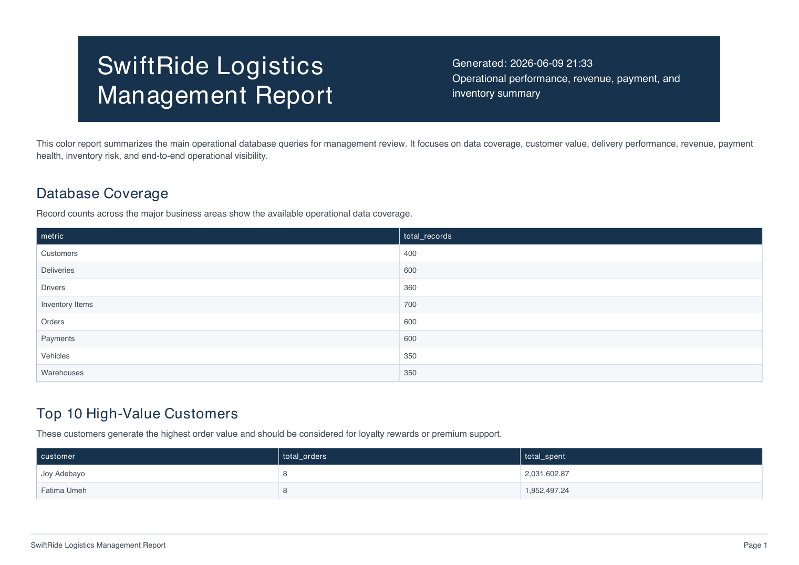

Enforced valid operational relationships
Validated every dataset foreign key and used PostgreSQL constraints to prevent orphaned orders, deliveries, payments, and inventory records.
PostgreSQL / Supabase / Data Engineering
A production-minded relational data platform that transforms fragmented logistics records into governed, queryable operations and decision-ready management reporting.
The objective
SwiftRide needed a single source of truth for customers, orders, deliveries, fleet resources, inventory, and payments. I designed the system to protect data integrity first, then make analysis repeatable.
Duplicate customers, missing payment details, and inconsistent inventory made reporting difficult to trust.
Orders, drivers, vehicles, and deliveries needed explicit relationships and safe cascading behavior.
Management lacked a reusable view of delivery status, customer value, payment health, and stock risk.
The solution needed repeatable imports, environment-based credentials, role controls, and shareable reporting beyond a local SQL client.
Technical architecture
The architecture separates business domains while preserving cross-schema relationships through primary keys, foreign keys, validation constraints, and cascade rules.

operationsCustomers, orders, and deliveries form the core transaction workflow.
fleetDrivers and vehicles support assignment, status, and capacity analysis.
warehouseWarehouse locations and inventory quantities enable stock monitoring.
financePayments connect financial status directly to customer orders.
Delivery workflow
I treated the project as an operational pipeline, not a collection of isolated SQL exercises.
Translated business requirements into normalized entities and relationships.
Applied keys, uniqueness, checks, cascading rules, and role-based access controls.
Automated foreign-key-safe CSV ingestion into Supabase PostgreSQL.
Built reusable DQL for revenue, delivery, customer, fleet, payment, and inventory analysis.
Generated Markdown and color PDF reports for technical and management audiences.
Key achievements
The strongest outcome was not a single query. It was an end-to-end system that could be recreated, validated, analyzed, and explained.
Validated every dataset foreign key and used PostgreSQL constraints to prevent orphaned orders, deliveries, payments, and inventory records.
Handled schema initialization, ordered CSV imports, constraint updates, sequence repair, and post-load row-count validation.
Introduced DCL and RBAC patterns for finance and operational schemas while keeping connection secrets outside version control.
Delivered both GitHub-friendly Markdown and a styled eight-page PDF with operational summaries and recommended actions.
Measured findings
The analytical layer surfaces performance, exceptions, and financial signals without requiring management to read raw SQL output.
| Signal | Result | Why it matters |
|---|---|---|
| Payment health | 423 paid | 70.5% of 600 payments completed successfully. |
| Delivery progress | 234 delivered | Creates a baseline for fulfillment performance. |
| Delivery exceptions | 62 pending | Identifies orders requiring immediate operational follow-up. |
| Inventory risk | 10 low-stock items | Highlights products below the quantity threshold of 20. |
| Customer value | 2.03M top spend | Supports retention and premium-service targeting. |
Business translation
Use pending-delivery records to focus dispatch follow-up and reduce customer wait time.
Track failed, pending, and refunded payments as a finance exception queue.
Use low-inventory detection to trigger timely replenishment decisions.
Rank customers by total order value to support loyalty and retention programs.
Compare driver delivery counts and statuses to improve assignment decisions.

Executive reporting
The reporting layer presents coverage metrics, high-value customers, delivery and payment status, revenue, low inventory, and recommended management actions.
The report generator queries Supabase read-only and produces consistent output that can be reviewed on GitHub or shared as a color PDF.
The takeaway
This project demonstrates how I connect database engineering, automation, governance, analysis, and stakeholder communication into one coherent delivery.
Explore the GitHub repository